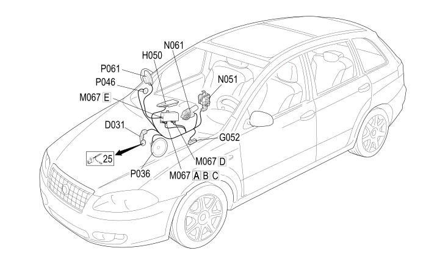

31 FRONT PASSENGER DOOR
- Path
- Electrical equipment > 2 WIRING > 31 FRONT PASSENGER DOOR
- Kind
- wiring harness
- Applies to
- all engines; all production periods
- Interactive page
- https://sloeber94.github.io/elrnDB-fCrm/en/#/194001821
Applies to: all engines; all production periods

Topics that link to this page (13)
- D031 PASSENGER FRONT DOOR COUPLING (FRONT PASSENGER DOOR)
- G052 RIGHT FRONT DOOR LIGHT (COURTESY) (FRONT PASSENGER DOOR)
- H050 ELECTRIC WINDOW SWITCH ON FRONT PASSENGER DOOR (FRONT PASSENGER DOOR)
- M067A PASSENGER DOOR CONTROL UNIT (NPP) (FRONT PASSENGER DOOR)
- M067B PASSENGER DOOR CONTROL UNIT (NPP) (FRONT PASSENGER DOOR)
- M067C PASSENGER DOOR CONTROL UNIT (NPP) (FRONT PASSENGER DOOR)
- M067D PASSENGER DOOR CONTROL UNIT (NPP) (FRONT PASSENGER DOOR)
- M067E PASSENGER DOOR CONTROL UNIT (NPP) (FRONT PASSENGER DOOR)
- N051 RIGHT FRONT DOOR LOCK GEARED MOTOR (FRONT PASSENGER DOOR)
- N061 RIGHT FRONT ELECTRIC WINDOW MOTOR (FRONT PASSENGER DOOR)
- P036 SPEAKER IN RIGHT FRONT DOOR (FRONT PASSENGER DOOR)
- P046 RIGHT FRONT TWEETER SPEAKER (FRONT PASSENGER DOOR)
- P061 RIGHT EXTERNAL REAR VIEW MIRROR (FRONT PASSENGER DOOR)